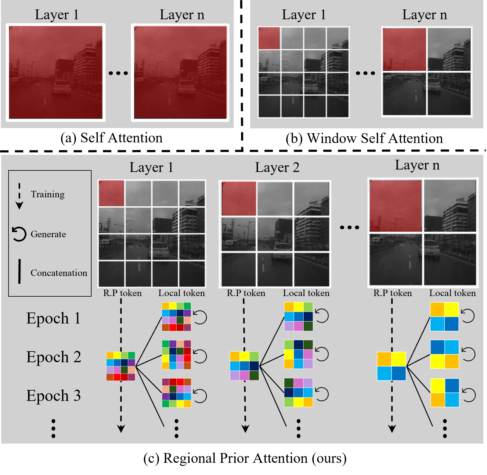
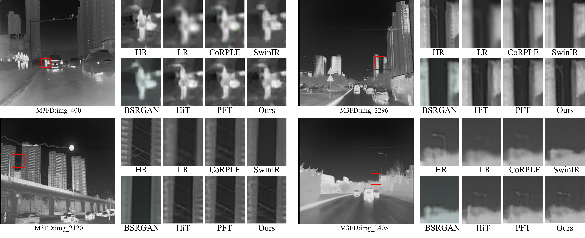
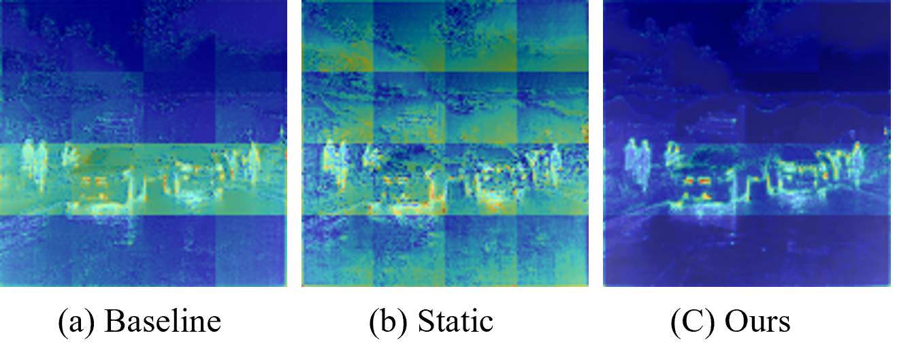

Abstract
We address a fundamental inefficiency in infrared image super-resolution: general-purpose models repeatedly learn spatial relationships even when cameras observe fixed or nearly static scene layouts. We propose the Regional Prior attention Transformer for infrared image Super-Resolution (RPT-SR), which explicitly encodes these persistent spatial regularities in its attention mechanism. Our dual-token framework combines learnable regional prior tokens, which retain position-specific structural information across training images, with local tokens that capture the content of each input frame. We refine these fused tokens through attention and use them to guide local reconstruction within a hierarchical window structure. We evaluate our approach on long-wave infrared (LWIR) and short-wave infrared (SWIR) datasets at ×2 and ×4 magnification. Our model achieves the strongest LPIPS, MUSIQ, and MANIQA results among the methods we compare on M3FD at ×4, along with competitive performance across RASMD and TNO. Through ablation experiments, we show that combining persistent priors with frame-specific features improves perceptual reconstruction over using either token type alone. Our approach demonstrates how scene-layout information can complement dynamic image features for infrared super-resolution.
Regional Prior Attention
We exploit the spatial regularities of fixed-viewpoint infrared scenes. In forward-facing driving images, for example, roads, buildings, and sky tend to occupy recurring regions. Rather than asking our model to rediscover these relationships in every input, we encode them as a learnable, position-specific memory.

Regional priors that persist across images
We assign learnable regional prior tokens to macro-window locations and share them across training images. We keep a separate set in each layer, allowing our attention blocks to learn structural regularities at different depths. These tokens are model parameters, not stored video frames.
Local features that adapt to each input
We generate local tokens from the current feature map using a 1×1 channel projection, a depth-wise 3×3 convolution, and average pooling. We then concatenate each local token with its regional prior along the channel dimension, combining frame-specific evidence with persistent spatial context.
Global guidance, local reconstruction
We first exchange information among the fused tokens through self-attention. We then redistribute them to their corresponding windows and apply attention jointly with the window tokens. Our hierarchical window schedule expands the spatial context in deeper layers, while residual paths and a pixel-shuffle head produce the high-resolution output.
Experimental Setup
We evaluate infrared super-resolution across two spectral domains. We train on our M3FD and RASMD splits and use TNO to assess cross-dataset generalization in the LWIR domain.
| Dataset | Spectrum | Training images | Test images | Evaluation role |
|---|---|---|---|---|
| M3FD | LWIR | 182 | 38 | Training and evaluation |
| TNO | LWIR | — | 37 | Cross-dataset evaluation |
| RASMD | SWIR | 3,696 | 498 | Training and evaluation |
We construct low-resolution inputs by bicubic downsampling from 512×512 high-resolution patches: 128×128 inputs for ×4 reconstruction and 256×256 inputs for ×2. We run our ×4 experiments on an NVIDIA RTX 4090 and our ×2 experiments on an NVIDIA A6000.
Model configuration
We use four Regional Prior Attention blocks with four transformer layers per block. Our full model uses 240 channels, six attention heads, and window sizes of 8×8, 16×16, 16×16, and 32×32. For RPT-SR-Light, we use 80 channels, four heads, and windows of 8×8, 8×8, 16×16, and 16×16.
We use one fused token per attention window and train for 100,000 iterations. To accelerate the learning of regional priors, we apply a 50× learning-rate multiplier to their parameters.
Results
We evaluate perceptual similarity with LPIPS and no-reference image quality with MUSIQ and MANIQA. Lower LPIPS is better; higher MUSIQ and MANIQA are better. On M3FD at ×4, we achieve the best value for all three quality metrics among the methods we compare.

M3FD · ×4 super-resolution
| Method | LPIPS ↓ | MUSIQ ↑ | MANIQA ↑ | FLOPs (G) ↓ | Params (M) ↓ |
|---|---|---|---|---|---|
| SwinIR | 0.2070 | 31.8550 | 0.1441 | 861.2700 | 11.9000 |
| HAT | 0.1118 | 39.6269 | 0.2448 | 345.6320 | 20.5100 |
| DAT | 0.1084 | 40.2458 | 0.2473 | 245.1820 | 14.8020 |
| RGT | 0.1094 | 41.3049 | 0.2482 | 207.6040 | 13.3570 |
| CAT-a2 | 0.1072 | 40.8421 | 0.2445 | 278.9230 | 16.6040 |
| PFT | 0.1045 | 38.9887 | 0.2451 | 319.1660 | 19.0570 |
| RPT-SR-Light | 0.1377 | 41.7372 | 0.2472 | 27.5540 | 3.9500 |
| RPT-SR | 0.1038 | 41.8049 | 0.2621 | 237.7830 | 25.8300 |
All 28 methods on M3FD at ×4
| Method | LPIPS ↓ | MUSIQ ↑ | MANIQA ↑ | FLOPs (G) ↓ | Params (M) ↓ |
|---|---|---|---|---|---|
| BSRGAN | 0.2372 | 33.6130 | 0.1643 | 297.7300 | 16.7000 |
| SwinIR | 0.2070 | 31.8550 | 0.1441 | 861.2700 | 11.9000 |
| HAT | 0.1118 | 39.6269 | 0.2448 | 345.6320 | 20.5100 |
| HAT-s | 0.1117 | 40.0702 | 0.2438 | 163.3130 | 9.3590 |
| DAT | 0.1084 | 40.2458 | 0.2473 | 245.1820 | 14.8020 |
| DAT-light | 0.1586 | 38.1636 | 0.2382 | 9.1060 | 0.6000 |
| DAT-S | 0.1148 | 40.0828 | 0.2468 | 186.4680 | 11.2120 |
| DAT2 | 0.1424 | 40.2149 | 0.2488 | 186.4710 | 11.2120 |
| RGT | 0.1094 | 41.3049 | 0.2482 | 207.6040 | 13.3570 |
| RGT-S | 0.1241 | 39.6106 | 0.2435 | 160.4810 | 10.1920 |
| CAT-a2 | 0.1072 | 40.8421 | 0.2445 | 278.9230 | 16.6040 |
| CAT-a | 0.1107 | 40.1292 | 0.2439 | 278.9180 | 16.6040 |
| CAT2 | 0.1186 | 39.2645 | 0.2394 | 202.4670 | 11.9250 |
| CAT | 0.1334 | 41.7353 | 0.2473 | 278.9080 | 16.6040 |
| SMFANet | 0.1682 | 36.6689 | 0.2345 | 2.9490 | 0.1970 |
| SMFANet-plus | 0.1656 | 37.1501 | 0.2463 | 7.4470 | 0.4950 |
| SRFormer | 0.1215 | 40.0070 | 0.2455 | 227.4040 | 10.4290 |
| SRFormer-light | 0.1739 | 35.0966 | 0.2332 | 14.1340 | 0.8400 |
| ART | 0.1148 | 39.0602 | 0.2390 | 283.7570 | 16.5460 |
| ART-S | 0.1801 | 37.6691 | 0.2408 | 203.2140 | 11.8670 |
| PFT | 0.1045 | 38.9887 | 0.2451 | 319.1660 | 19.0570 |
| PFT-light | 0.1577 | 37.5897 | 0.2423 | 11.3370 | 0.6970 |
| ATD | 0.1357 | 41.6795 | 0.2496 | 310.2350 | 19.8840 |
| ATD-light | 0.1625 | 37.4732 | 0.2486 | 11.6690 | 0.6610 |
| HIT-SR | 0.1516 | 38.3516 | 0.2375 | 13.0660 | 0.7920 |
| CoRPLE | 0.2320 | 31.0734 | 0.2022 | 37.5920 | 0.5910 |
| RPT-SR-Light | 0.1377 | 41.7372 | 0.2472 | 27.5540 | 3.9500 |
| RPT-SR | 0.1038 | 41.8049 | 0.2621 | 237.7830 | 25.8300 |
Across datasets and scales
We obtain the lowest LPIPS among the compared methods on RASMD at ×4 and on both RASMD and M3FD at ×2. On the cross-dataset TNO evaluation at ×4, we achieve 0.2501 LPIPS, compared with 0.2475 for HAT. We see benefits from our dual-token design across the LWIR and SWIR evaluations, while TNO remains a challenging cross-dataset setting.
| Dataset | Scale | RPT-SR | Best competing method | Competing LPIPS |
|---|---|---|---|---|
| RASMD (SWIR) | ×4 | 0.1535 | CAT-A | 0.1548 |
| TNO (LWIR) | ×4 | 0.2501 | HAT | 0.2475 |
| RASMD (SWIR) | ×2 | 0.0285 | HAT-S | 0.0286 |
| M3FD (LWIR) | ×2 | 0.0728 | ATD-light | 0.0730 |
All 24 methods on RASMD and TNO at ×4
| Method | RASMD LPIPS ↓ | TNO LPIPS ↓ |
|---|---|---|
| BSRGAN | 0.1884 | 0.4095 |
| SwinIR | 0.2415 | 0.4797 |
| HAT | 0.1560 | 0.2475 |
| HAT-S | 0.1603 | 0.2543 |
| DAT | 0.1623 | 0.2534 |
| DAT-light | 0.1650 | 0.3534 |
| DAT-S | 0.1603 | 0.2548 |
| RGT | 0.1638 | 0.2809 |
| RGT-S | 0.1582 | 0.2853 |
| CAT | 0.1559 | 0.3280 |
| CAT-2 | 0.1604 | 0.2973 |
| CAT-A | 0.1548 | 0.3280 |
| CAT-A2 | 0.1577 | 0.3269 |
| SMFANet | 0.1755 | 0.3609 |
| SMFANet-plus | 0.1711 | 0.3574 |
| ART | 0.1592 | 0.2536 |
| ART-S | 0.1650 | 0.3374 |
| PFT | 0.1608 | 0.3229 |
| PFT-light | 0.1647 | 0.3440 |
| ATD | 0.1589 | 0.3163 |
| ATD-light | 0.1667 | 0.3431 |
| HIT-SR | 0.1675 | 0.3442 |
| CoRPLE | 0.3087 | 0.3671 |
| RPT-SR | 0.1535 | 0.2501 |
All 13 methods on RASMD and M3FD at ×2
| Method | RASMD LPIPS ↓ | M3FD LPIPS ↓ |
|---|---|---|
| BSRGAN | 0.1457 | 0.1314 |
| SwinIR | 0.0354 | 0.0732 |
| HAT-S | 0.0286 | 0.0731 |
| RGT | 0.0383 | 0.0746 |
| RGT-S | 0.0409 | 0.0759 |
| SMFANet | 0.0377 | 0.0819 |
| SMFANet-plus | 0.0355 | 0.0766 |
| ART-S | 0.0313 | 0.0750 |
| PFT-light | 0.0364 | 0.0759 |
| ATD-light | 0.0359 | 0.0730 |
| HiT-SR | 0.0347 | 0.0772 |
| CoRPLE | 0.0373 | 0.0766 |
| RPT-SR | 0.0285 | 0.0728 |
Ablation Study
We isolate the contribution of each token type by comparing a local-only baseline, a static-prior-only variant, and our fused model. We achieve the best LPIPS, MUSIQ, and MANIQA values across all three datasets when we use both regional priors and local tokens.

| Token configuration | LPIPS ↓ | MUSIQ ↑ | MANIQA ↑ |
|---|---|---|---|
| Local only | 0.105057 | 41.2597 | 0.26091 |
| Static prior only | 0.105324 | 41.6872 | 0.26034 |
| RPT-SR (both) | 0.103793 | 41.8049 | 0.26213 |
| Token configuration | LPIPS ↓ | MUSIQ ↑ | MANIQA ↑ |
|---|---|---|---|
| Local only | 0.25048 | 36.4154 | 0.24596 |
| Static prior only | 0.25257 | 38.2838 | 0.24903 |
| RPT-SR (both) | 0.25014 | 38.5862 | 0.25125 |
| Token configuration | LPIPS ↓ | MUSIQ ↑ | MANIQA ↑ |
|---|---|---|---|
| Local only | 0.154442 | 44.39395 | 0.223607 |
| Static prior only | 0.154457 | 44.72269 | 0.225821 |
| RPT-SR (both) | 0.153543 | 44.91027 | 0.226634 |
We increase computation from 231.366 to 237.783 GFLOPs and model size from 25.454 to 25.830 million parameters relative to our local-only baseline. We treat this as a trade-off between model size and perceptual reconstruction quality.
| Token configuration | FLOPs (G) | Params (M) |
|---|---|---|
| Local only | 231.366 | 25.454 |
| Static prior only | 229.100 | 25.377 |
| RPT-SR (both) | 237.783 | 25.830 |
Resources
We provide our implementation and configuration files in our GitHub repository. Our article is available through IEEE Xplore, with an open manuscript on arXiv. For our SWIR experiments, we use the RASMD dataset.
Scope and future work
We target fixed or nearly static viewpoints with recurring spatial structure, and our experiments use synthetic bicubic downsampling. We plan to compress the learned priors and extend our regional-prior mechanism to additional restoration tasks, including video super-resolution.
BibTeX
@inproceedings{jin2026rptsr,
title = {{RPT-SR: Regional Prior attention Transformer for infrared image Super-Resolution}},
author = {Jin, Youngwan and Park, Incheol and Nalcakan, Yagiz and Ju, Hyeongjin and Yeo, Sanghyeop and Kim, Shiho},
booktitle = {2026 IEEE/CVF Winter Conference on Applications of Computer Vision (WACV)},
pages = {5184--5193},
year = {2026},
publisher = {IEEE},
doi = {10.1109/WACV61042.2026.00503},
url = {https://doi.org/10.1109/WACV61042.2026.00503}
}
Youngwan Jin, Incheol Park, Yagiz Nalcakan, Hyeongjin Ju, Sanghyeop Yeo, Shiho Kim. RPT-SR: Regional Prior attention Transformer for infrared image Super-Resolution. 2026 IEEE/CVF Winter Conference on Applications of Computer Vision (WACV), pp. 5184–5193, 2026. DOI: 10.1109/WACV61042.2026.00503